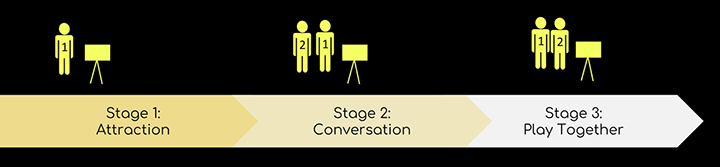

Instructions for the strangers:
Interactive installation design
Oct. 2018
Joint work with Karen El Asmar
Intro:
A experimental public installation as well as a touchpoint for stranger-to-stranger interaction.
Strangers were attracted to stay and then cooperated to solve the "puzzle" and finally create their own graffiti. In this way, we created a communication among strangers.


Location:
New York is considered the "Mecca of Graffiti", the place where graffiti originated.Bushwick Collective, 19 St Nicholas Ave, Brooklyn, NY 11237, USA. It is considered as an outdoor gallery of graffiti artists from all over the world.

Research and observation:
- Daytime:
There are always a lot of visitors wandering around the blocks in Bushwick to appreciate graffiti. Visitors would take pictures for or with the graffiti, and post them onto social media. - Nighttime:
The only active zone at night in Bushwick is a cross with bars, and the other zones are quiet and seem unsafe. Graffiti works are hard to be seen or appreciated after sunset because of the dark. - Crowd analysis:
The area seemed to be dominated by youths in their 20-30s. - Special finding:
All the walls are occupied with graffiti works except only one white brick wall at the central area. Many people pass next to this wall on their way to the restaurants, bars and nightclubs and this area stays alive even after midnight.
Basic setup

Guiding questions for brainstorming:
How might we create a new form of graffiti that allows those who were previously "spectators & observers" to participate in its creation?
How might we create "sustainable graffiti"? What is "sustainable graffiti"?
Ideations:
Concept 1: Playing piano on the wall
It is a graffiti work entitled Recordeal, which is created by Oji. Music could be a good cure for strangers to communicate and the trick of light and shadow could make the graffiti come to life at night. The idea involves shadows and light and can only be done at night but the location is so deserted at night, hence, we decided to abandon the idea.


Concept 2: Create Your Own (on the white wall)
Passersby can create shadow and graffiti on the wall using their own bodies. The shadow of other passersby can be a part of the shadow graffiti. In this way, an interactive activity and a decentralized storytelling can be established among the passerby "painters", passerby "actors" and the unique white wall.
We selected this idea for further exploration.
Guiding questions for prototyping:
How to get the players aware of the game and stand on the proper positions?
How to encourage them to play?


In order to arouse participants' interest of exploration, we set up puzzles and Easter eggs, encouraging them to try different potentially possible control gestures and find out the control patterns.
Interaction among strangers:
Three types of roles are involved in the interaction: the actor, the controller and the spectator. Two kinds of interaction: interaction among complete strangers and interaction among different groups of friends.

The actor, the controller and the spectator:


Interaction among complete strangers:

Interaction among different groups of friends:


Overview of the field test:

Future iterations:
More intuitive way to draw
Subtle cue of where to place the hand at the beginning
More potential triggers as feedback for players to explore while playing
Enable "actors" to participate in painting with "controller"
Behind the scenes: